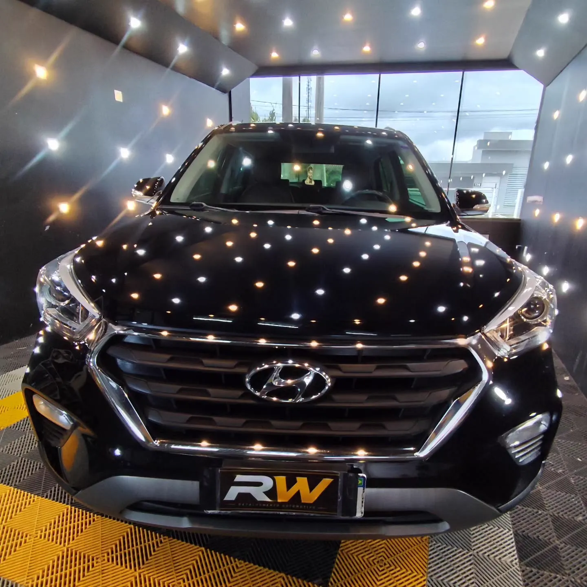
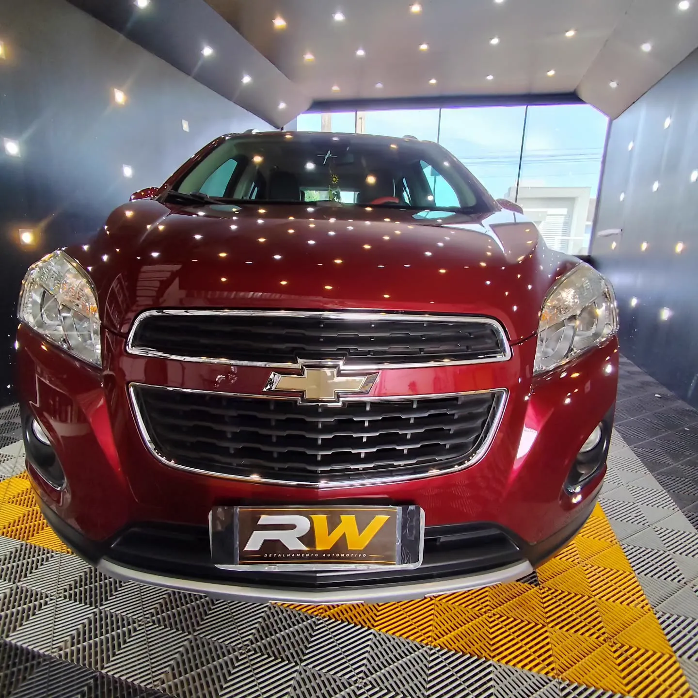
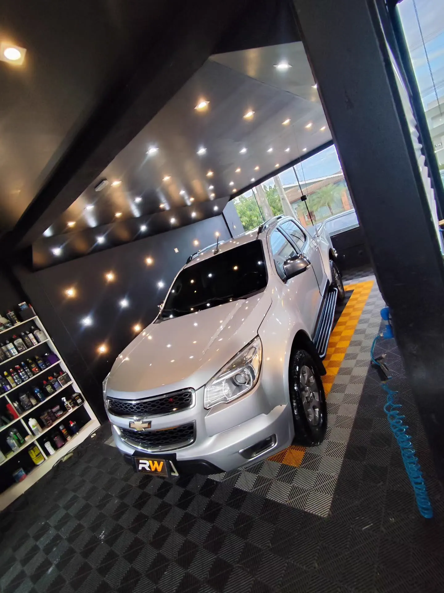
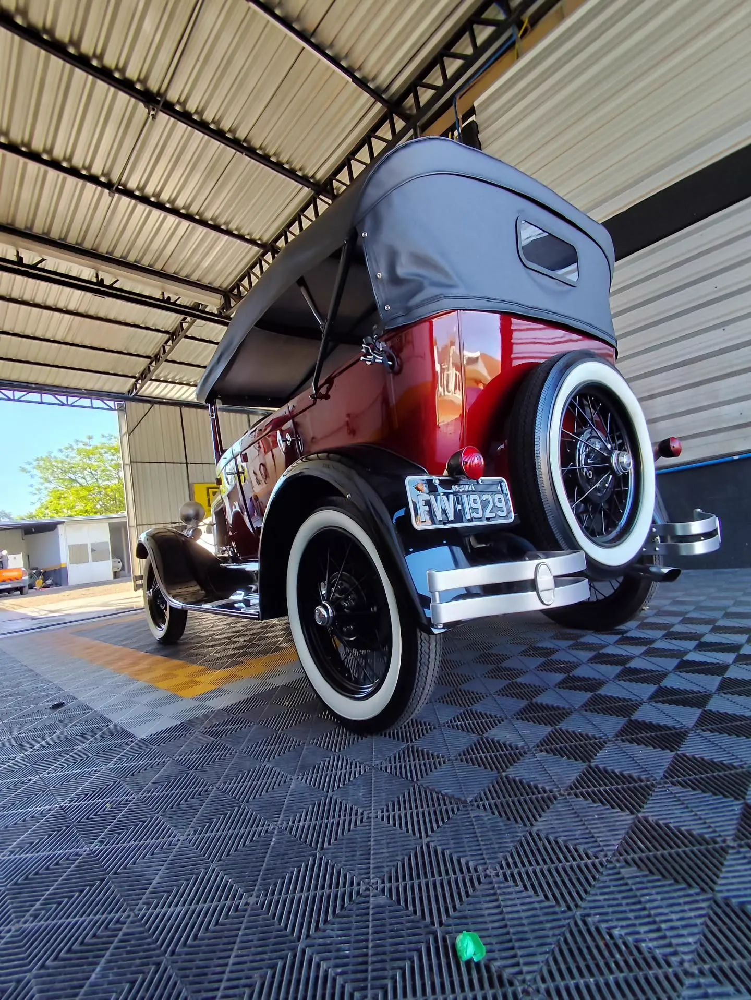

Polimento automotivo
Cuidados com o acabamento e a aparência da pintura, conforme a avaliação do veículo.
Detalhamento automotivo em Santa Rosa. Cuidados com a pintura e o interior para quem valoriza o próprio veículo.

Uma seleção dos veículos que passaram pela RW. Pintura, reflexos e acabamento nas fotos originais dos trabalhos.
Mais no Instagram

O serviço começa pela necessidade do seu veículo. Converse com a RW para avaliar o tratamento indicado e as condições de atendimento.
Falar sobre meu veículoCuidados com o acabamento e a aparência da pintura, conforme a avaliação do veículo.
Limpeza e cuidados com as superfícies e o interior do seu carro.
Retoques e acabamento em conjunto com os cuidados estéticos, conforme avaliação.
Polimento técnico e vitrificação: consulte as opções de proteção para a pintura.

A RW Detalhamento Automotivo reúne cuidados estéticos para carros e motos em Santa Rosa, no Rio Grande do Sul.
Conheça os trabalhos e fale sobre o que seu veículo precisa. Envie fotos pelo WhatsApp para iniciar a conversa sobre o serviço, a avaliação e a disponibilidade.
Acompanhar a RWConte qual é o veículo e o que você procura. A RW orienta a consulta de serviço diretamente pelo WhatsApp.
Conversar no WhatsApp (55) 99618-5305Rua Giruá, 166